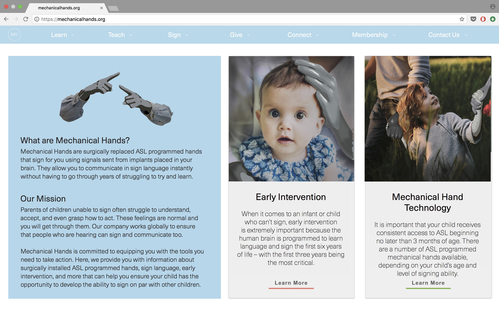
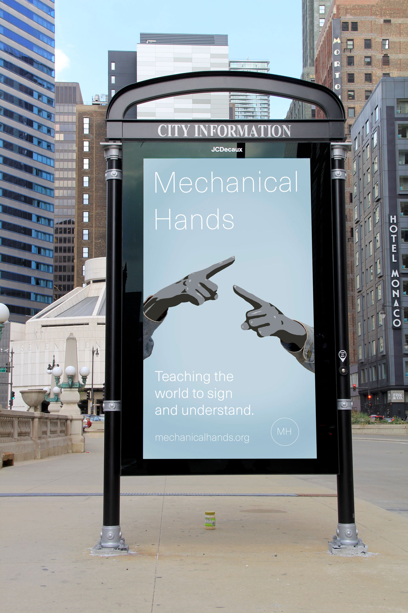
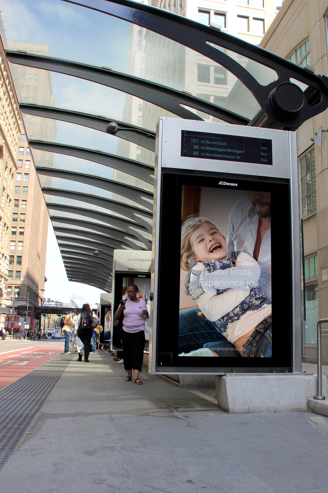
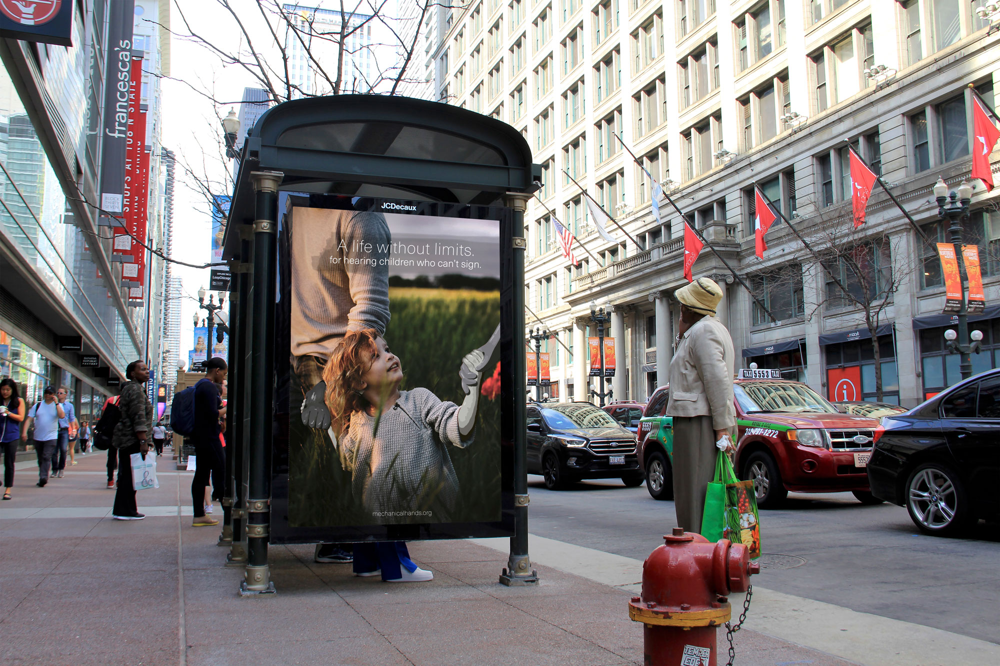
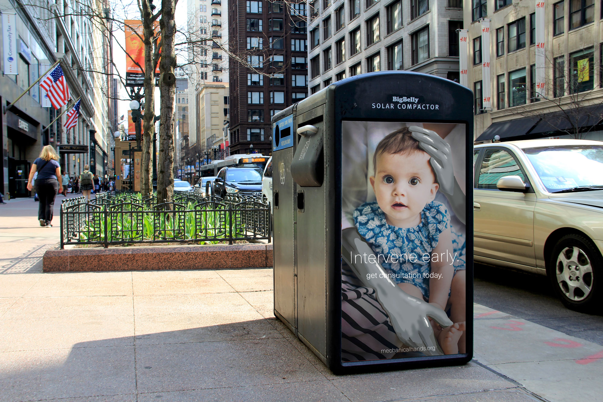

Mechanical Hands are ASL programmed hands designed for hearing people who lack the ability to sign and communicate with others. The process of obtaining mechanical hands consists of preliminary tests to determine candidacy, surgical operation in order to install an implant in the brain and replace the user's hands with mechanical ones programmed with ASL, and follow up care to activate, program, and adjust the hands and implant.




